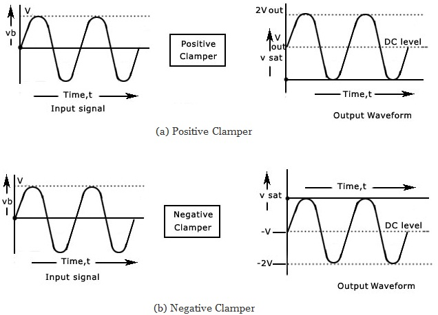
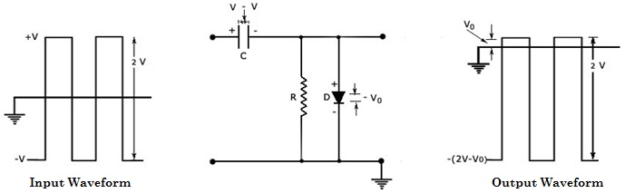
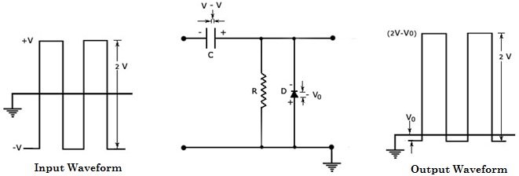

|  |
|  |
Similarly in the figure shown below, the diode arrow points upward, again the same direction as the dc shifts. It means that, when the diode points upward. We have a positive dc clamper and when the diode points downward, the circuit is a negative dc clamper.
|  |
A number of clamping circuits with their effect on the input signal are shown in the figure above. All the figures shown above have the input and output signals in square waves, the same procedure can be used for sinusoidal inputs. In fact, one approach to the analysis of clamping networks with sinusoidal inputs is to replace the sinusoidal wave signal by a square wave of the same peak values. The resulting output will then form an envelope for the sinusoidal response, as illustrated in the figures in the calculation section. The diodes have been assumed to be ideal and 5 RC >> T/2 in drawing the output waveforms.